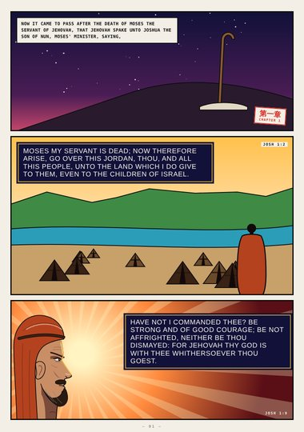
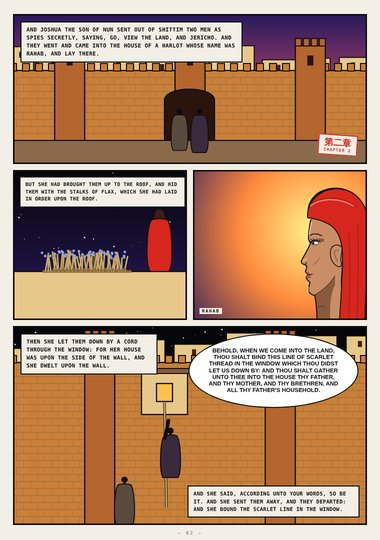
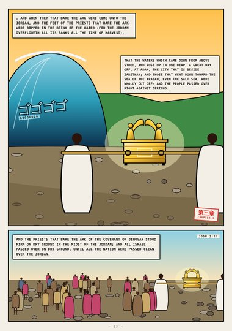
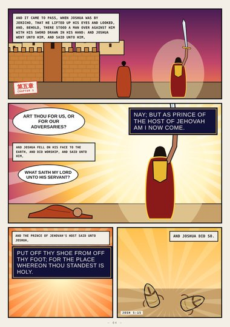
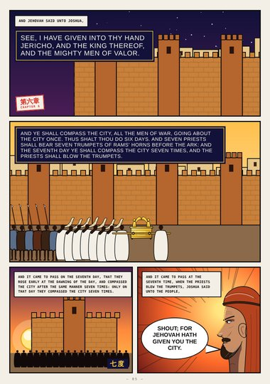
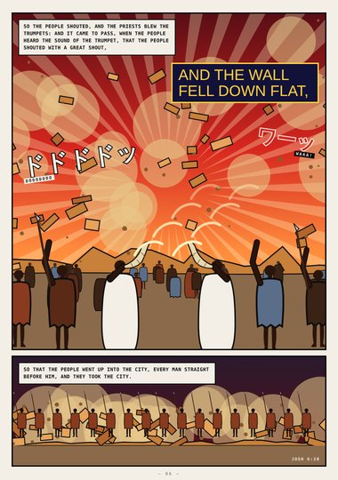
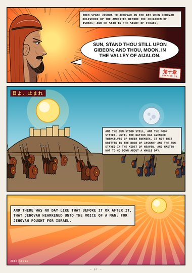
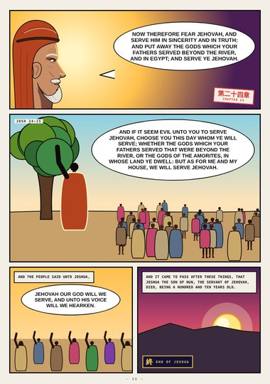

Joshua (digest) · Book One · Joshua 1–24
Jericho
Be strong and of good courage, Rahab and the scarlet line, the Jordan heaped up, the prince of Jehovah's host, the walls of Jericho falling flat, the sun standing still, and Joshua's farewell.
Digest edition: an early, abridged first draft (highlights only). The full edition is replacing it.
Start reading ›Pages
 CoverCoverJoshua 1–24
CoverCoverJoshua 1–24
Page 1Be StrongJoshua 1:1–9
Page 2RahabJoshua 2:1–21
Page 3Crossing JordanJoshua 3:15–17
Page 4The Prince of the HostJoshua 5:13–15
Page 5Compass the CityJoshua 6:2–16
Page 6The Wall Fell Down FlatJoshua 6:20
Page 7Sun, Stand Thou StillJoshua 10:12–14
Page 8Choose You This DayJoshua 24:14–29